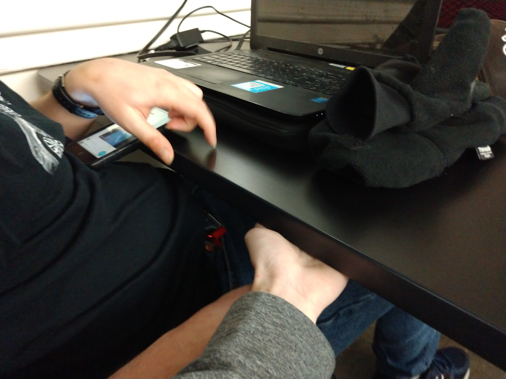

Reading 2 Chapter 3
Q1.Explain your experiences where your senses have momentarily misled you or someone you know.
Give examples of this
My sense of hearing was momentarily misled, while watching a youtube video about beekeeping. I was listening to it through my earbuds, unknown to me, when the bees’ buzz around to the camera that the person was using to record. My hearing thought there were actual bees around me and causing me to squirm a little.
Q2. What does the 'The Early Adopters Dream Technology' example on page 80 and the mangrove analogy starting on page 81 say about the role of language and its relationship to thought and meaning. Do you agree with the Authors assertion.
I agree with Clark’s assertion of the role of language and its relation to thought and meaning, continuation of language, similar cognitive of learning. More access to thought and meaning. The mangrove example, as the tree grows. Our language(a technology, a tool) grows to catch the cognitive debris to build upon thought. The tree represent words and collects concepts.
Q3. The Ideas of 'meta learning' (page 67) and of constructive learning (page 83) are brought up in this chapter. What do these 2 ideas have in common in terms of the process of learning and using information and memory. Please eloborate your thoughts on how you can 'learn' something from this.
Meta learning, is knowing how to acquire and exploit information.. To elaborate, meta learning is learning how to get information, researching for a paper by using google for example. While constructive learning builds itself upon through what it learns through meta learning.
Chapter 3 Take Home Assignment
The Pain in the Desktop... experiment
It was awkward in the beginning, but as I tried it on my friend he began to felt as if I was tapping him from the top of the table. Odd sensataion, really. I thought of smacking my hand on the table to see him in shock. Though I didn't want to stress him out even further.
Special in-class exercise and questions for Democracy as Service
If you were to use some form biometric data from your own body to use in some way? 1. What kind of biometric measurement will you make? A biometric measurement that surveys for overall health for the user. 2. What kind of electronic device will you use? A device to wear like a helmet for full body scans and wrist device similar to a fitbit for less intensive scans. 3. What decision-making scenario will you use it for? Scenario's would involve 4. How will you implement it to make that decision (i.e., feedback mechanism)? 5. How will you run an initial experiment with the device? 6. How will you document the experiment in order for others to confront your idea?
Our group didn't get a chance to chat with John, but we had a interesting converstation. Started by the usual case of stress, after that we thought of a way to montior our stress levels to see if it effects performance. Afterwards our converstation grew into montiering overall health.